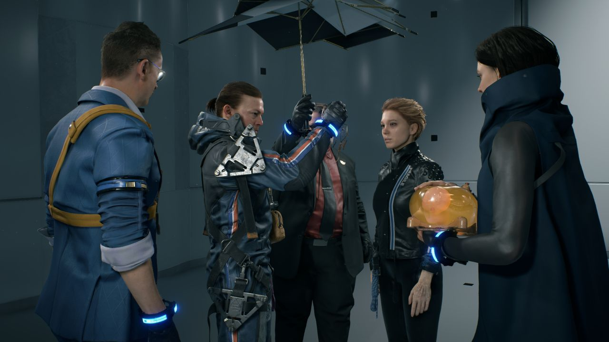
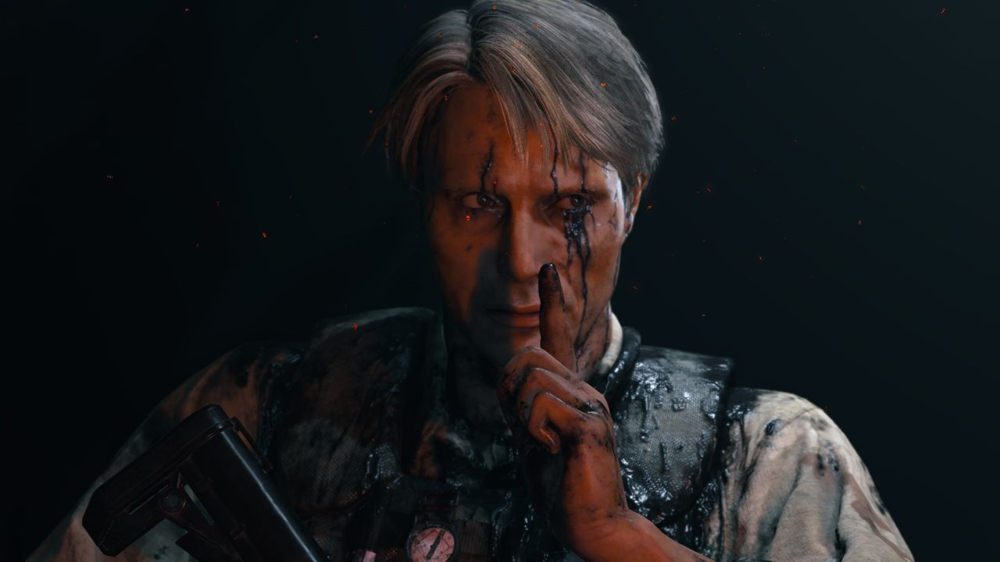
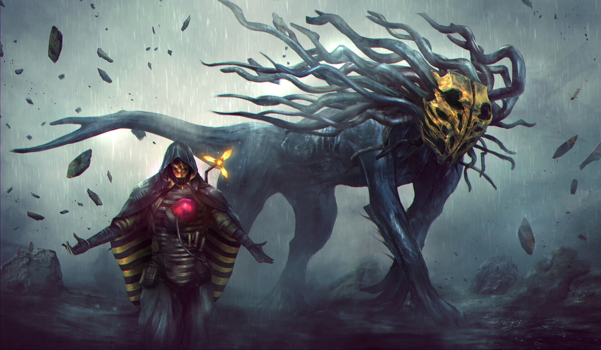
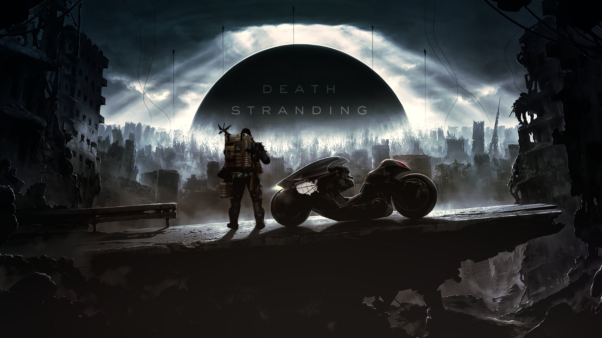

Hình ảnh đầy chi tiết
114 commentNếu bạn từng chơi Horizon: Zero Dawn thì chắc chắn bạn đã há hốc mồm bởi vẻ đẹp đầy tuyệt mỹ của trò chơi, từ những chi tiết và biểu cảm hết sức thực trên khuôn mặt của từng nhân vật cho đến cách mà cây cối, vật thể hay môi trường tương tác với nhau.
Tương tự, Death Stranding đã sử dụng một bản cải thiện của khung phần mềm trong Horizon: Zero Dawn, với cái tên Decima Engine (đặt tên theo hòn đảo mà người Nhật và Hà Lan trao đổi hàng hóa trong thế kỷ 17). Điều này không chỉ cho phép trò chơi thể hiện vô số những quang cảnh đầy ấn tượng như “người đồng môn” của mình mà đôi khi còn lung linh hơn, từ những ngọn cỏ đung đưa trong gió cho đến các hiệu ứng thời tiết khiến cho thế giới của Death Stranding hết sức sinh động.
Âm nhạc được đặt hàng riêng cho game
Chẳng những thế, đồ họa của game còn có thể hiện rõ những chi tiết vô cùng nhỏ bé chẳng hạn như những lúc Sam… nổi da gà, từng “chân tơ kẽ tóc” khi của nhân vật khi quay cận cảnh… Bên cạnh những hình ảnh đẹp mắt, tựa game còn có dàn thiết kế âm thanh vô cùng sinh động. Đã có nhiều lần người viết đã “rợn người” mỗi khi nghe thấy tiếng bước chân hay tiếng gào thét của lũ BT, hoặc tiếng suối chảy trong những giây phút lặng tĩnh không tiếng người hay âm thanh mưa Timefall chạm xuống mặt đất…
Không chỉ vậy, các bản nhạc nền trong game phải gọi là cực kỳ tuyệt vời, những bản nhạc của Low Roar sâu lắng hay được phát lên khi “síp hàng” dễ dàng hòa vào thiên nhiên đầy hùng vĩ trong trò chơi, để khiến cho bạn có thể tận hưởng cuộc hành trình dài của mình.
Cốt truyện độc nhất vô nhị
Đây không thể là một tựa game của Kojima nếu như phần cốt truyện không thể làm rung động người chơi.
Bạn vào vai Samuel Porter Bridges, một người giao hàng cô độc với hội chứng “sợ bị tiếp xúc cơ thể” (Aphenphosmphobia) muốn thực hiện ý nguyện cuối cùng của người mẹ quá cố của mình bằng cách kết nối mọi thành phố trong vùng đất với hệ thống mạng Chiral và xây dựng một nước Mỹ mới tên là United Cities of America (Hợp chủng thành phố Hoa Kỳ, viết tắt UCA). Sam Bridges ban đầu là một kẻ thờ ơ, không hề quan tâm tới bất kì ai và cũng chẳng hứng thú gì với việc tái xây dựng tương lai cho loài người.
Hắn ngày đêm đi giao hàng và chỉ nghĩ đến việc làm sao để có thể sống sót qua ngày, mãi cho đến khi bị người mẹ Bridget của mình thuyết phục thì hắn mới cho việc kết nối đất nước lại một cơ hội.
Từ đó, ta thấy được sự thay đổi chậm rãi sang một con người tốt hơn của Sam, khi anh dần dần kết nối với toàn bộ nhân vật và không còn tự cô lập bản thân nữa, điều này được thể hiện rõ nhất qua hình ảnh đối lập giữa đầu game khi Sam từ chối con bọ Cryptobiote từ Fragile và việc Sam xin cô con bọ đó vào gần cuối trò chơi. Không chỉ vậy, điều tuyệt nhất về cách mà Kojima xây dựng cốt truyện là mọi chi tiết đều được vén màn một cách vô cùng chậm rãi, khiến cho người chơi liên tục phải đặt câu hỏi cho mọi thứ mình thấy, chẳng hạn: BT là gì? Tại sao lại có sự kiện Death Stranding? Vì sao anh nhân vật chính lại vác theo… một cái bào thai sống?
Và tất cả những câu hỏi này đều được trả lời một cách đầy đủ và vô cùng khỏa đáng từ lúc chơi cho đến kết thúc mà không tạo cảm giác đánh đố, gây khó hiểu cho người chơi.
Nhân vật có thật ở ngoài đời
Bên cạnh lối kể chuyện kịch tính, tựa game còn có một dàn diễn viên cộm cán “thổi hồn” cho từng nhân vật. Đây là những cái tên lớn trong ngành phim điện ảnh chẳng hạn như Norman Reedus (vai Sam Porter Bridges), Mads Mikkelsen (vai Clifford Unger), Léa Seydoux (vai Fragile)… Đạo diễn huyền thoại Guillermo del Toro cùng với Nicolas Winding Refn lần lượt đóng góp ngoại hình cho hai nhân vật vô cùng quan trọng trong cốt truyện là Deadman và Heartman, thế nhưng cả hai đều được lồng tiếng… bởi người khác.
Một điều vô cùng thú vị về Death Stranding đó là cách mà cốt truyện được chia thành các chương trong đó mỗi chương đều được đặt tên theo một nhân vật và trò chơi sẽ khai thác hoàn toàn nhân vật đó. Điều này đã làm cho dàn nhân vật với ngoại hình vốn đã phong phú bỗng có thêm một chiều sâu mới, bởi mỗi người họ đều có một khoảng khắc trong truyện mà họ chia sẻ những bi kịch trong cuộc đời họ với anh chàng Sam.
Từng nhân vật với các bí mật thầm kín mà người chơi cùng Sam “vén màn” trong quá trình chơi sẽ tạo ra rất nhiều cảm xúc đặc biệt mà bạn không thể tìm thấy ở những tựa game khác, bởi rất nhiều lần người viết đã xúc động không nói nên lời khi trải nghiệm chúng, đặc biệt là diễn xuất của Tommie Earl Jenkins trong vai Die-Hardman ở cuối game!
Mối liên kết giữa người và người
Có lẽ phần gây ra nhiều tranh cãi nhất về Death Stranding chính là lối chơi của game, nhiều người đã chê tựa game vô cùng buồn chán và là một game “walking simulator”, nhưng lại có những người lại nói lối chơi hay vô cùng, vậy nó có thực sự hay không? Thành thật mà nói, người viết đã cảm thấy lối chơi của trò chơi… cực kỳ buồn tẻ ở màn dạo đầu: nhận đơn hàng, sắp xếp kiện hàng và di chuyển đến nơi cần giao. Với việc lúc nào cũng phải đi giao hàng từ nơi này sang nơi khác không có một chút thay đổi gì, người viết chỉ muốn “làm cho xong” để xem trò chơi còn gì khác nữa không, đồng thời tự hỏi rằng tại sao Kojima lại muốn mình phải chịu khốn khổ như thế?
Điều này hoàn toàn thay đổi khi người viết đặt chân sang chương Ba, bản đồ được mở rộng ra và kế hoạch của Kojima dần trở nên hiện hữu. Bên cạnh việc bản đồ được mở rộng, người chơi còn được sử dụng các phương tiện vận chuyển khác nhau để khiến việc đưa đồ trở nên “dễ thở” hơn. Ngoài ra, đây cũng là lúc hệ thống chơi mạng của Death Stranding đóng góp rất lớn trong trải nghiệm của người chơi, bạn có thể đặt bất kỳ dụng cụ nào lên thế giới và đâu đó sẽ có người sử dụng nó và ngược lại người khác có thể xây dựng bất kì công trình nào và bạn cũng có thể xài nó.
Khi bạn sử dụng đồ của người khác, bạn có thể gửi gắm lời cảm kích của mình dưới dạng “Like”. Khi bạn “thả Like” bất kỳ vật phẩm nào của người khác thì đó họ sẽ nhận thêm điểm kinh nghiệm và ngược lại. Khi tích đủ điểm kinh nghiệm, bạn sẽ lên cấp, lên đủ cấp thì anh chàng Sam của bạn sẽ được cải thiện kỹ năng.
Quái vật cực kỳ thông minh
Trong chuyến giao hàng của mình, bạn chắc chắn sẽ gặp phải những mối đe dọa không cho bạn hoàn thành đơn hàng của mình. Mối đe dọa đầu tiên chính là những con BT – những linh hồn của người đã khuất lang thang trên thế giới sống.
Nếu bị những con Gazer phát hiện, chúng sẽ tạo những con Hunter để dìm bạn xuống vũng nước đen và kéo bạn ra xa, đồng thời triệu hồi một con Catcher để tấn công bạn. Nếu bị Catcher nuốt chửng sẽ tạo ra một vụ nổ Voidout khiến cho một phần bản đồ bị mất và bạn sẽ không thể đi qua đây nữa.
Cách tốt nhất để đối đầu với BT chính là hãy né chúng, bạn có thể dùng BB của mình để nhìn thấy được vị trí những con Gazer và lựa chọn đường đi của mình. Nếu như bị buộc phải phòng thân, hãy sử dụng những vũ khí có tẩm máu của Sam, ví dụ như Hematic Grenade, Bola Gun…
Mối đe dọa tiếp theo chính là những kẻ cuồng hàng hóa: MULE, chúng xuất hiện xuyên suốt trò chơi và sẽ tìm mọi cách để giật kiện hàng của bạn. Đối đầu với chúng cũng khá dễ, bạn có thể sử dụng sợi dây thừng của mình (Strand) để lén lút hạ từng tên, hoặc dùng nó để phản đòn đánh trực tiếp từ chúng. Một điều mà bạn không nên làm chính là… xử tử chúng, bởi xác chúng sẽ kéo BT đến và tạo Voidout nếu lũ BT ăn xác họ. Bạn cũng có thể đề phòng điều này nếu nhanh chóng thiêu hỏa xác nhưng điều này sẽ tốn rất nhiều thời gian và bạn chỉ có thể chở một lúc một cái xác trên người. Nghe thì cảm thấy thật “mệt mỏi”, nhưng từ đây mọi thứ đã trở nên rõ ràng: Kojima không hề muốn người chơi phải chịu khổ cực một mình – bởi bạn sẽ gặp rất nhiều khó khăn khi “đơn phương độc mã”.
Tổng Kết
Death Stranding mang đến một trải nghiệm "có một không hai" dành cho những ai đã và luôn hâm mộ lối xây dựng game của Hideo Kojima - luôn mới mẻ, luôn đột phá, nội dung bí ẩn, đầy khó hiểu nhưng lại dẫn dắt đầy tài tình và đầy sâu lắng. Thế nhưng, việc sở hữu lối chơi đơn giản và có phần chậm rãi đã khiến cho Death Stranding là một “món ăn” không dành cho mọi người, đặc biệt là những ai vốn ưa thích những trận đấu nảy lửa nhịp độ cao.

topgamer June 21, 2024
Chờ đợi 8 năm cho 1 game siêu phẩm thế này
Replysuperstar_9xSeptember 11, 2023
Mê quá hichic
Reply